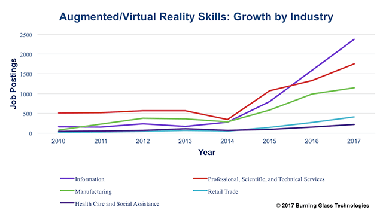
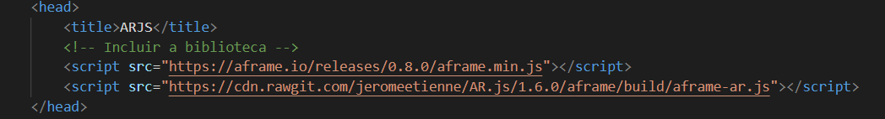
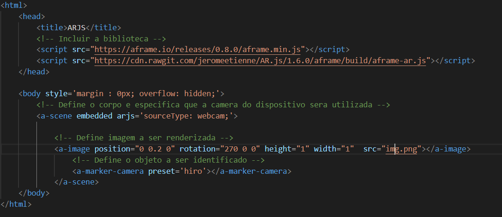

Realidade aumentada (RA), é um conjunto de tecnologias que sobrepõe dados e imagens digitais em objetos e ambientes físicos. Também pode ser entendida como uma visão direta ou indireta ao vivo de um ambiente físico, do mundo real, cujos elementos são aumentados (ou suplementados) por dados sensoriais gerados por computador, como som, vídeo, gráficos ou dados de GPS. É comum que as pessoas confundam a RA com a Realidade Virtual (RV) porém é importante saber distinguir a diferença entre essas duas tecnologias. A RV imerge as pessoas em um ambiente completamente virtual. Já a RA cria uma sobreposição de conteúdo virtual, mas não consegue interagir com o ambiente.
No contexto da RA, o usuário usa óculos especiais ou usa o smartphone para visualizar os objetos virtuais que foram adicionados ao mundo real. Um bom exemplo disso é a mania de Pokémon Go que fez muito sucesso há alguns anos. O Pokémon Go usa a câmera do celular para mostrar o mundo à sua frente e, em seguida, adiciona Pokémons virtualmente criados em cima dessa visão, permitindo que você “interaja” com os Pokémons na tentativa de “capturá-los”. Realidade Aumentada é sobre adicionar ao mundo real, não criar um novo.
O objetivo da RA é aumentar o mundo real com recursos de manipulação de informações. Ela é usada para descrever um sistema que aprimora o mundo real ao sobrepor informações geradas por computador. As tecnologias de RV (Realidade Virtual) mergulham completamente um usuário dentro de um ambiente sintético. Enquanto imerso, o usuário não pode ver o mundo real ao seu redor. Em contraste, a AR permite ao usuário ver o mundo real, mas sobrepõe informações geradas por computador ou compostas com o mundo real. Portanto, o AR suplementa a realidade, em vez de substituí-la completamente. Combinar gráficos 3D com o mundo real em um espaço 3D é útil, pois aprimora a percepção e a interação do usuário com o mundo real. Além disso, as informações aumentadas, como anotações, instruções de fala, imagens, vídeos e modelos 3D, ajudam o usuário a realizar tarefas reais.
Os sistemas de RA foram propostos como soluções em muitos domínios, incluindo assistência médica, entretenimento, treinamento militar, projeto de engenharia, robótica e tele-operação, e assim por diante. Por exemplo, os médicos podem ver imagens de ultrassom virtuais sobrepostas no corpo de um paciente, dando-lhes o equivalente à visão de raios X durante uma biópsia por agulha, enquanto um motorista de carro pode ver as imagens em infravermelho da visão noturna sobrepostas à estrada. Outro domínio importante é a montagem, manutenção e reparo de máquinas complexas, nas quais gráficos gerados por computador e prompts de texto seriam desenvolvidos para treinar e auxiliar o pessoal da fábrica durante a manipulação complexa ou tarefas de manutenção e reparo de equipamentos.
Existem vários softwares para se criar modelos 3D para a Realidade aumentada, um deles é a famosa plataforma para criação de jogos de computador/video-games Unity. Com Unity é possível criar modelos de uma infinidade de objetos, personagens, etc. Esses modelos depois podem ser usados por uma aplicações que suportam Realidade Aumentada. Uma outra forma de se criar modelos é utilizar o glTF que é um software para transmissão e criação de cenas 3D. Esses modelos/cenas 3D podem ser lidos por uma simples tag da biblioteca AR-JS (que será mostrada mais à frente). Outra forma mais simples ainda é indicar para o AR-JS imagens e até textos para serem sobrepostos. Nesses casos não é necessário criar um modelo 3D.
Apesar de ser possível utilizar softwares para modelar os objetos reais em objetos 3D, no vídeo a própria aplicação trata de identificar os objetos reais e duplica-los. Outros softwares para criar modelos 3D são: Blender, MagicaVoxel, AutoDesk Maya e Maxon Cinema4D. Além disso existem sites onde você pode encontrar modelos 3D para download: Sketchfab, Clara.io, Archive3D, Sketchup's 3D Warehouse, TurboSquid e Blender. Além da modelagem de objetos 3D é possível transformar produtos; objetos físicos em modelos 3D para serem utilizados na aplicação como é mostrado no vídeo abaixo:
O Google revelou sua nova ferramenta de modelagem 3D, chamada Blocks, para simplificar o processo de criação de experiências atraentes de realidade virtual (VR) e realidade aumentada (AR). A nova ferramenta, desenvolvida para os headsets HTC Vive e Oculus Rift, funciona permitindo que os usuários criem um objeto 3D em uma tela 3D virtual. O Blocks é projetado de forma que qualquer pessoa, sem qualquer experiência prévia em modelagem, possa usar e se sentir mais como brincar com blocos infantis do que trabalhar com software tradicional de modelagem 3D. Começando com um conjunto simples de formas, uma paleta de cores e um conjunto intuitivo de ferramentas, um usuário poderia criar rapidamente quase tudo o que pudesse imaginar - de um pedaço de melancia a uma cena florestal inteira. Depois que o usuário terminar o modelo 3D, o arquivo pode ser exportado no formato OBJ para uso em aplicativos RA ou RV que estão sendo desenvolvidos. O aplicativo está disponível gratuitamente na Oculus Store e na plataforma Steam. O Google também criou uma página onde os designs dos usuários do bloco são exibidos.
Este trabalho se propõe a esclarecer o conceito de Realidade Aumentada (RA) bem como diferencia-lo do conceito de Realidade Virtual (RV) trazendo exemplos de aplicações no mundo do entretenimento e também no mercado de trabalho. Além disso, também é discutido a importância para o profissional de TI de se manter atualizado quanto aos conceitos de RA e RV. Ao longo do trabalho é mostrado como um pequeno projeto de Realidade Aumentada para a web foi criado.
Combinar gráficos 3D com o mundo real em um espaço 3D é útil, pois aprimora a percepção e a interação do usuário com o mundo real. Além disso, as informações aumentadas, como anotações, instruções de fala, imagens, vídeos e modelos 3D, ajudam o usuário a realizar tarefas reais. Por exemplo: planejamento de neurocirurgia na Harvard Medical School, onde o órgão interno do paciente é sobreposto em 3D sobre o paciente real, permitindo que o cirurgião “veja” dentro da cabeça do paciente. Outros exemplos de empresas que estão utilizando a tecnologia de RA é mostrado a seguir:
Snapchat: com o lançamento do Snapchat Lenses em 2015, o Snapchat foi a primeira empresa de mídia social a trazer com sucesso recursos de RA para sua base de usuários. Nos dois anos seguintes, as lentes se transformaram talvez no recurso mais popular do Snapchat. Ele também se tornou um grande gerador de receita para a empresa, graças à capacidade de marcá-lo para patrociná-lo. O Snapchat continuou a melhorar o valor que as marcas obtêm das lentes de realidade aumentada. No ano passado, a Adweek informou que o Snap está facilitando para os anunciantes dos EUA o patrocínio de lentes que segmentam um grupo específico de informações demográficas, incluindo idade e sexo, além do conteúdo que as pessoas consomem. Anteriormente, as marcas só conseguiam comprar segmentação com foco nacional.
IKEA: Quando se trata de comprar móveis, as visitas à loja sempre foram necessárias para os clientes. No entanto, a IKEA está tentando mudar isso através do uso de realidade aumentada. Em setembro do ano passado, foi lançado o IKEA Place, um aplicativo que permite aos clientes colocar virtualmente móveis dentro de casa. Construído em colaboração com a Apple, o IKEA Place dimensiona automaticamente produtos em ambientes reais com 98% de precisão, de acordo com a empresa. O aplicativo também permite que os usuários capturem e compartilhem fotos e vídeos de móveis virtualmente posicionados com familiares e amigos. Mais de 2.000 itens estavam disponíveis durante o lançamento do aplicativo e a IKEA planeja lançar novas linhas de produtos no futuro. A empresa, há mais de oito décadas, está otimista de que o uso de realidade aumentada aumentará sua lucratividade nos próximos dois anos. De acordo com Digiday, a IKEA está projetando vendas on-line para chegar a US $ 5,9 bilhões até 2020. Para efeitos de comparação, as vendas online renderam US $ 1,6 bilhão em receita total da IKEA em 2016.
Octosense: O Octosense redefine o que é possível quando se trata de experiências AR. Desenvolvem soluções para os desafios associados à criação de uma verdadeira realidade aumentada. A tecnologia Octosense permite que tablets, telefones celulares e HMDs atuais gerem conteúdo 3D realista em tempo real, com um nível de fidelidade visual normalmente reservado para PCs desktop e que reajam às condições de iluminação de qualquer ambiente real em tempo real. Suportando a maioria dos dispositivos móveis da geração atual, fornecem rastreamento e localização robustos de movimento para dispositivos com câmeras rgb (ou seja, sem sensores de profundidade embarcados). Além disso oferecem uma solução completa na forma de uma plataforma unificada que oferece a melhor e mais estável experiência de realidade aumentada para smartphones de detecção de profundidade, HMD e dispositivos ios/android.
Facebook: O Facebook quer disponibilizar o AR para as massas e, com seu tremendo alcance, já tem uma vantagem inicial. É mais fácil para as pessoas experimentarem a RA com o aplicativo que já possuem - Facebook, Instagram e Messenger. Alguns anunciantes do Facebook estão obtendo acesso exclusivo para testar anúncios com efeitos especiais com "toque para experimentar recursos". Quer ver como um par de óculos de sol fica no seu rosto - você pode fazer isso virtualmente com RA. Outra inovação é capacidade de fazer fotos regulares parecerem em 3D. Isso tem potencial para fornecer aplicativos adicionais em RA, como incorporar um objeto 3D como um presente virtual em um post de notícias. Além disso, a RA pode ser usada no Facebook Messenger para visualizar e experimentar produtos.
Mensagens ou conteúdo localizados geograficamente: a capacidade de colocar uma mensagem, objeto ou experiência 3D em um local específico do mundo real, que só pode ser visualizado por meio de um dispositivo nesses locais. Arte do Snapchat, WallaMe, World Brush.
Mobilia: A capacidade de visualizar um catálogo virtual de móveis, sobrepostos em escala em uma sala que um consumidor gostaria de fornecer, e a capacidade de tomar decisões de compra compondo vários arranjos de mobília juntos.
Entretenimento localizado geograficamente: jogos que movem os usuários pelo mundo real para locais específicos para marcar pontos. Pokemon Go, Ingress e Jurassic World Alive.
Wayfinding: Sobreposição de direções de mapeamento de GPS tradicionais para o mundo em vez de em um mapa 2D,para facilitar a navegação e incluir personagens divertidos como HotStepper.
Exibições de produtos de comércio eletrônico: A Realidade Aumentada sempre foi antecipada para mudar a forma como as pessoas veem o mundo ao seu redor, mas também revolucionará a forma como fazemos compras on-line. Vendo produtos em 3D em sua própria casa antes de comprar, inclusive experimentando virtualmente a pré-compra de roupas para aumentar a experiência do cliente.
Para rodar aplicações RA não é muito complicado, basta que o usuário tenha um smartphone ou tablet que possua uma camera, com isso o usuário já pode experimentar aplicativos de RA. Na loja de aplicativos de celulares android e ios por exemplo podem ser encontrados vários apps e jogos que utilizam RA. Um exemplo bem conhecido e já citado aqui é o jogo Pokemon Go. Já o ambiente para o desenvolvedor depende da tecnologia que será utilizada. Se se deseja modelar objetos específicos então é recomendado a escolha de um software adequado como o Blender ou o AutoDesk. Mas se não serão utilizados modelos 3D ou já se tem os modelos disponíveis então basta utilizar um software para programação. Alguns exemplos são: ARToolKit, A-Frame, ARjs. Algumas outras tecnologias para desenvolvimento de aplicativos de realidade aumentada são exibidos na imagem a seguir:
O ARjs é uma solução eficiente de Realidade Aumentada na Web. Ele é executado 100% no seu navegador, isso significa que nenhum aplicativo precisa ser instalado! Não há necessidade de um dispositivo específico, por ex. Tango ou iphone. Ele é executado em todas as plataformas móveis: Android, iOS11 e Windows Mobile. Você pode usá-lo com seu próprio smartphone. Dependendo do seu dispositivo, ele pode rodar muito rápido, até 60fps em telefones de até dois anos. Além disso, o código é de código aberto e está disponível no github
O ARjs segue todos os padrões web e recomendações do W3C (World Wide Web Consortium) que é uma comunidade internacional onde os membros organizacionais, uma equipe em tempo integral e o público (desenvolvedores, por exemplo), trabalham juntos para desenvolver os padrões para a criação e a interpretação dos conteúdos para a Web.
Os trabalhos de realidade aumentada e realidade virtual estão se tornando forças muito reais no mercado de trabalho. Nos primeiros nove meses de 2017 já foram cerca de 10 mil postagens solicitando habilidades profissionais em AR/VR nos EUA. Isso representa um aumento relativo de 256% em relação a 2010. Considerando o burburinho em torno dessas tecnologias - que inclui a compra da Oculus pelo Facebook e a decisão pós-Glass do Google de investir US $ 542 milhões na solução de hardware vestível da Magic Leap - fica claro que pessoas qualificadas serão necessárias para continuar o impulso. Entre os empregadores, a maior demanda é proveniente do Facebook. A Accenture também está aumentando a sua contratação para RA/RV. A contratação da empresa de consultoria para RA e RV aumentou mais de 300% nos últimos dois anos. De longe, o principal papel que envolve RA e RV é o desenvolvedor de software/engenheiro, seguido pelo desenvolvedor de aplicativos móveis, engenheiros de sistemas de computação/arquitetos e outras funções. Em outras palavras, não há nada virtual sobre os trabalhos nesse campo. Eles estão aqui e agora e são muito reais.
O gráfico acima é uma pesquisa da Burning Glass Technologies, eles verificaram as ofertas de trabalho de RA postadas ao longo de 7 anos, começando em 2010. Como pode ser observado no gráfico a procura por profissionais capacitados para trabalhar com tecnologia de RA só tem aumentado. A pesquisa também mostra que as indústrias de informação e manufatura que criam essa tecnologia continuam a buscar as habilidades de RA e RV. Do lado do consumidor, o setor de varejo vem apresentando demanda cada vez maior desde 2015. Outro setor de alto crescimento é o profissional, o científico e o técnico.
Para utilizar o ARjs e bastante simples. Primeiro importamos a biblioteca e os arquivos necessarios:
Em poucas linhas de codigo usando esta biblioteca e possivel criar uma simples aplicacao AR. O proximo passo e esconder o corpo do html e criar a cena com a tag < a scene> . Alem de criar um espaco para renderizar objetos e nessa tag que informamos que a camera do dispositivo sera utilizada.
Em seguida definimos a imagem que sera renderizada, aqui poderia ser um objeto 3D criado no Unity ou Google Blocks por exemplo. Tambem e possivel informar textos para serem renderizados. Neste caso utilizei uma imagem do personagem Super Mario. E importante que a imagem esteja no formado PNG pois assim o fundo fica invisivel.
Por fim informamos a tag < a - marker - preset - camera >. Essa tag e responsavel por informar o "marcador" que e basicamente uma imagem que sera reconhecida pela camera do smartphone ou tablet e é em cima dessa imagem que sera renderizado o objeto desejado. E possivel adicionar modelos 3D que possuem movimento e com o javascript manipular esse objeto para adicionar mais interacao com o usuario. O codigo completo pode ser visualizado na imagem abaixo:
A realidade virtual e a realidade aumentada são reflexões inversas umas das outras, em relação ao que cada tecnologia quer realizar. A realidade aumentada sobrepõe elementos virtuais no mundo real, enquanto a realidade virtual recria digitalmente uma configuração da vida real. Realidade Virtual e Realidade Aumentada vão se tornar mainstream em breve. As coisas já estão mudando e, antes que percebamos, estaremos vivendo em um mundo mais virtual do que real. É provável que a realidade aumentada penetre cada vez mais no nosso cotidiano no século XXI. Uma vez que os computadores vestíveis se tornam cada vez mais comuns, não será estranho ver as pessoas interagindo e reagindo a coisas que não estão na sua perspectiva. Graças a tecnologias como a realidade aumentada, a maneira como trabalhamos com dispositivos de computação e pensamos sobre a divisão entre a realidade digital e analógica provavelmente mudará fundamentalmente. No entanto nada está impedindo você de experimentar a realidade aumentada para si mesmo hoje. Basta acessar a loja de aplicativos do smartphone e pesquisar aplicativos "RA". Há muito para tentar, muitos deles gratuitos.
A maioria dos especialistas em tecnologia considera a RA como o futuro do design. Quando se trata de desenvolvimento de aplicativos de realidade aumentada, é óbvio que a RA está fornecendo excelentes oportunidades para aumentar efetivamente as experiências do usuário, mesmo além da medida. Todos já sabem a importância dos telefones celulares na sociedade atual. Esses aparelhos se tornaram parte integrante da vida das pessoas, e a RA pode se tornar extensões de seus corpos. Mesmo sem ser intrusivo, há toda a possibilidade de que a tecnologia possa ser ainda mais integrada às vidas humanas. Além da área do design, fica bastante claro, como visto ao longo do trabaho, que inúmeras profissões (e também nossa vida cotidiana) podem ser transformadas radicalmente pela RA.
< https://tecnoblog.net/195283/realidade-virtual-aumentada-aplicacao-diferenca-futuro/>.
< http://www.realidadeaumentadabrasil.com.br/ >.
< http://www.postdigital.cc/blog/artigo/o-que-e-realidade-aumentada-e-como-ela-funciona >.
< http://www.flexinterativa.com.br/blogflex/quais-as-melhores-aplicacoes-de-realidade-aumentada >.
< http://gtthealthcare.com.br/blog/index.php/realidade-aumentada-setor-saude/
< https://www.hypeness.com.br/2014/11/4-exemplos-de-como-a-realidade-aumentada-ja-esta-melhorando-a-nossa-vida/ >
< https://assuntonerd.com.br/2010/02/01/realidade-aumentada-modelagem-3d-no-artoolkit/ >.
< https://so3d.com.br/google-lanca-ferramenta-de-modelagem-3d-em-vr-e-ar-gratuita/ >.
< https://www.codigofonte.com.br/noticias/google-lanca-ferramenta-3d-para-realidade-virtual >.
< https://exame.abril.com.br/marketing/marcas-usam-a-realidade-virtual-para-alimentar-o-crescimento/ >.
< https://portalnovarejo.com.br/2017/06/realidade-virtual-empresas/ >.
< https://exame.abril.com.br/marketing/16-usos-inteligentes-de-realidade-aumentada-em-campanhas/ >.
< https://imersiovr.wordpress.com/2018/05/11/exemplos-reais-de-empresas-que-usam-realidade-virtual-vr-no-mercado/ >.
< https://portalnovarejo.com.br/2017/03/aplicacoes-realidade-virtual-varejo/ >.
< https://computerworld.com.br/2018/08/21/7-exemplos-que-mostram-o-potencial-da-realidade-virtual-para-os-negocios/ >.
< http://cio.com.br/tecnologia/2018/09/20/realidade-aumentada-comeca-a-se-tornar-realidade-em-operacoes-de-ti/ >.
< https://blogbrasil.westcon.com/realidade-aumentada-na-pratica-como-pode-ser-usada-nos-negocios >.
< http://www.linhadecodigo.com.br/artigo/2488/artoolkit-criando-aplicativos-de-realidade-aumentada.aspx >.
< https://universidadedatecnologia.com.br/como-fazer-um-app-de-ar-realidade-aumentada/ >.
< https://www.youtube.com/watch?v=EvckirgE78w/ >.
< https://www.burning-glass.com/blog/augmented-reality-virtual-reality-jobs-become-real/ >.
< https://universidadedatecnologia.com.br/augmented-reality-ar-como-negocio/>.
< https://inforchannel.com.br/2018/05/02/mercado-de-realidade-aumentada-chegara-a-us-63-bilhoes-ate-2021/ >